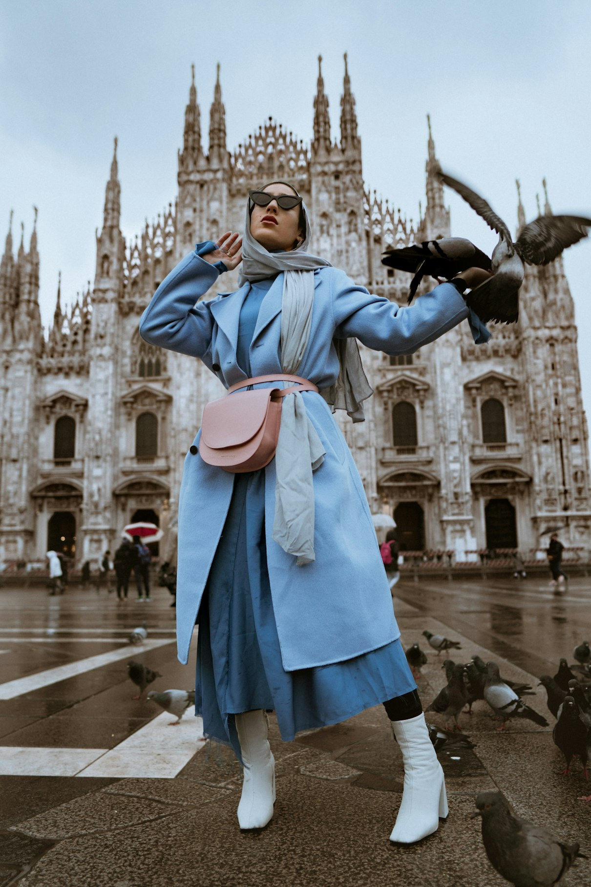
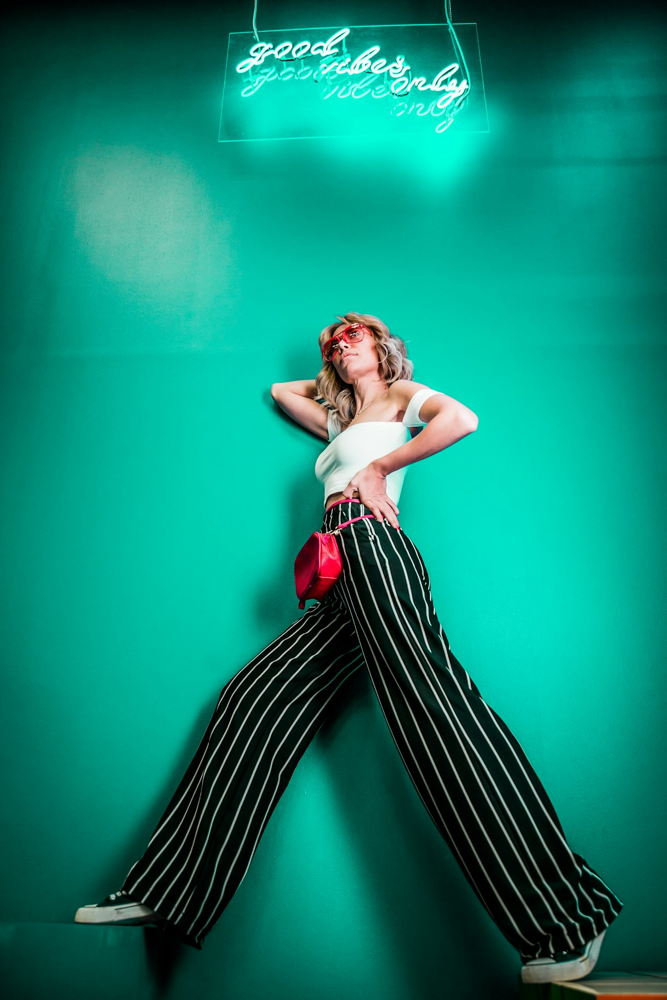

Textile PhysicsThe Physics of Bias Cut and Fluid Drape: Geometric Tailoring in Mulberry Silk and Crepe de Chine
A rigorous examination of 45-degree warp-weft shear mechanics, gravity deformation, and zero-spandex elasticity in luxury eveningwear.
Read Monograph → Chromatics
Chromatics
Ruby Pigment Chronology: Carmine, Madder Root, and Sustainable Algal Chromophores in Haute Couture
The evolutionary history and biochemical extraction of natural red dyes, alizarin molecular bonding, and modern non-toxic algal alternatives.
Read Monograph →
OuterwearArchitectural Outerwear: Double-Faced Wool Melange, Canvas Interfacing, and Thermal Silhouette Design
Master tailoring techniques for hand-split double cloth seams, horsehair canvas chest piece structuring, and cold-weather drape control.
Read Monograph → Wardrobe Math
Wardrobe Math
Capsule Wardrobe Mathematics: Modular Sartorial Geometry for Seasonless Drift Collections
Combinatorial matrix modeling and color harmony algorithms for constructing versatile, minimalist 7-piece luxury wardrobes.
Read Monograph →Sustainable Luxury Knitwear: 17.5-Micron Extra-Fine Merino, Zero-Waste 3D Seamless Weaving, and Fiber Longevity
Micron grading, fiber crimp thermodynamics, and Wholegarment computer-controlled 3D knitting technology in high fashion.
Read Monograph → Ergonomics
Ergonomics
The Ergonomics of Contemporary Tailoring: Shoulder Pitch, High Armhole Drafting, and Dynamic Range of Motion
Kinematic drafting principles, scye depth adjustments, and sleeve pitch balance that eliminate jacket lift during dynamic arm extension.
Read Monograph →